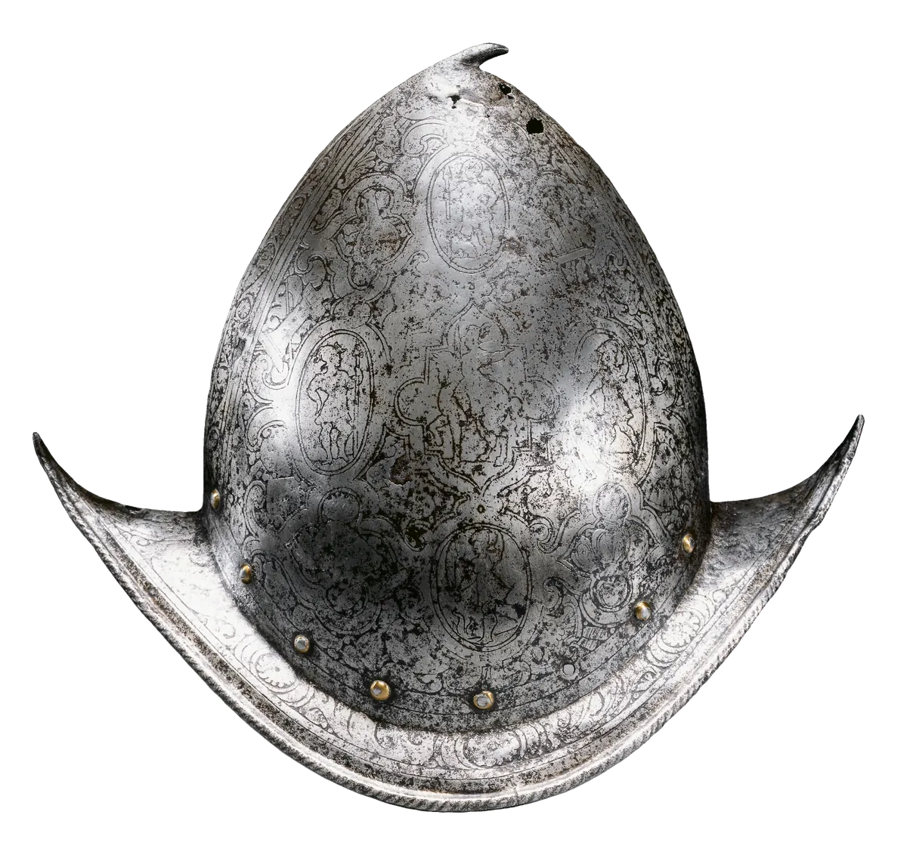
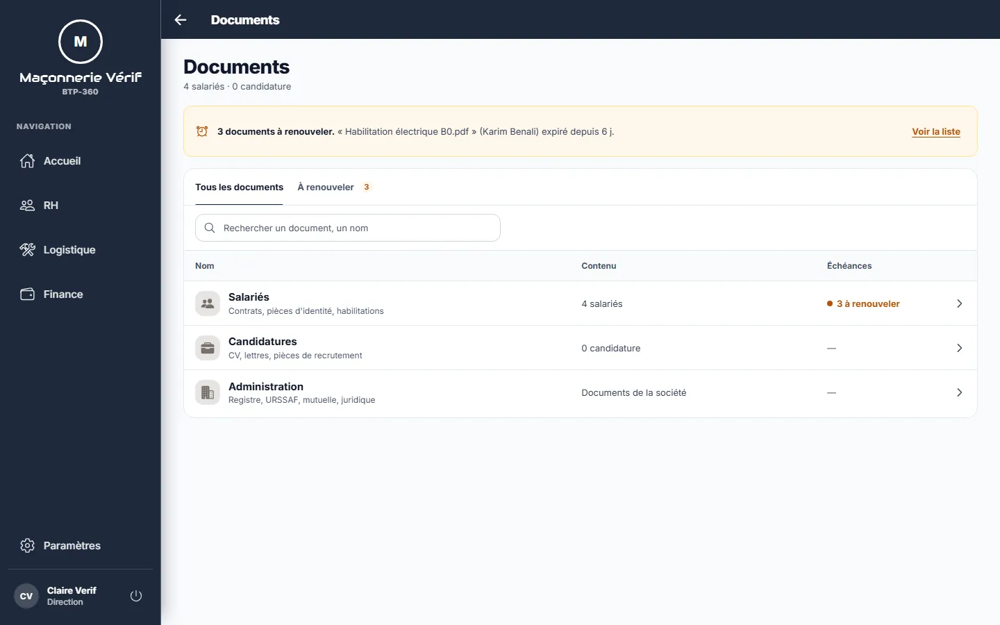
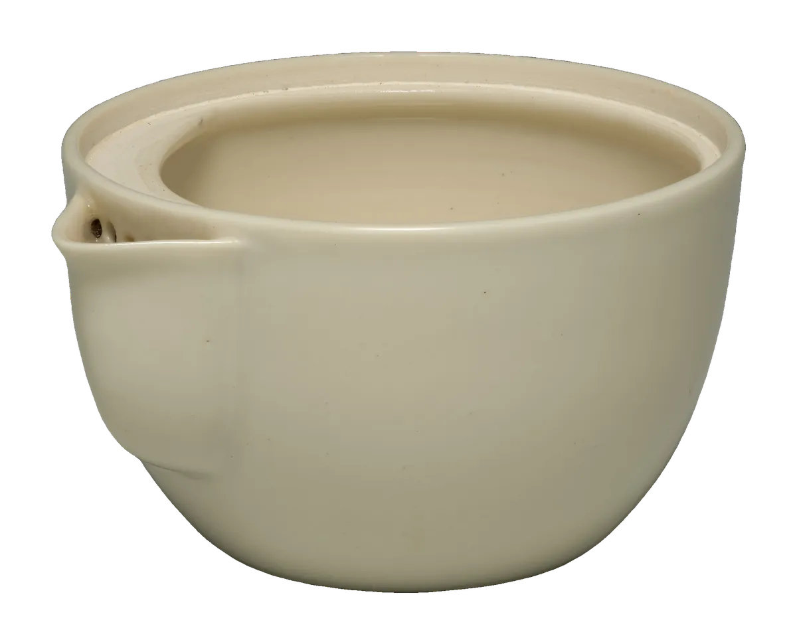
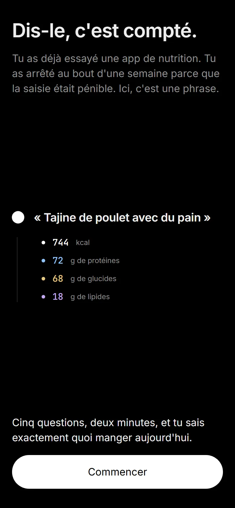
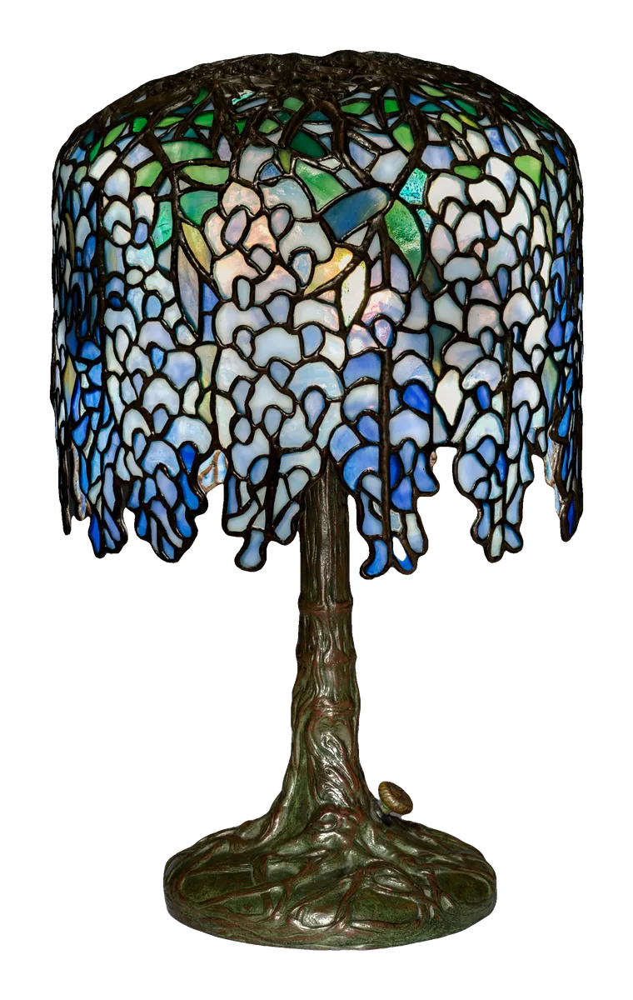
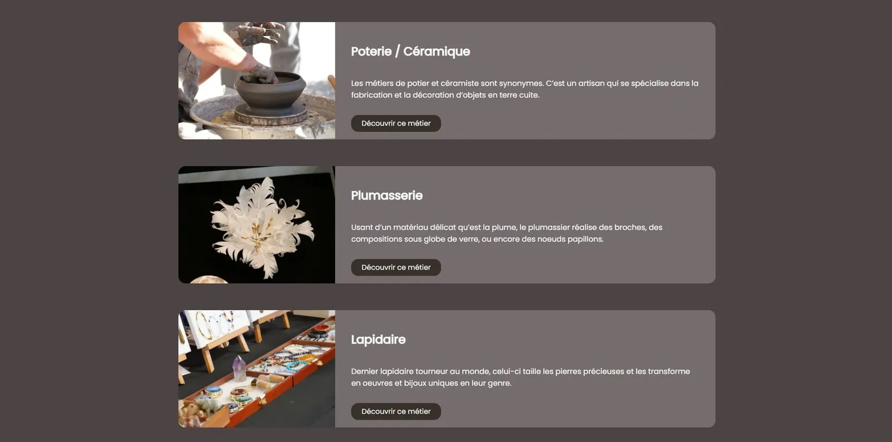
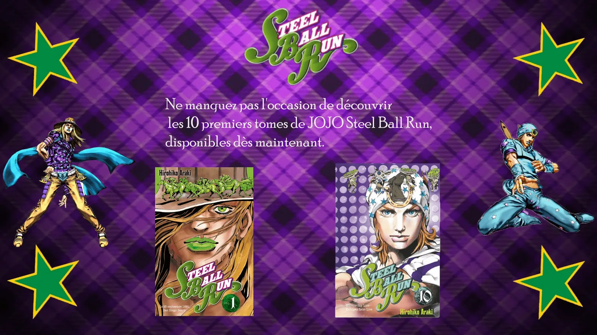

ZiyadChaabi
Full Stack Software Engineer
On my own, I built and shipped a business application now in production (Angular, NestJS, AWS) for four construction companies. I came to code from design.
Available now for a permanent role21 months of experience in internships and work-study
Based in Troyes, open to relocating, hybrid or remote
I think first about the people who will use the tool, on a building site or with a VR headset on, and only then about the stack.
Selected work
Four projects told in detail: the problem, my part, the decisions, the result.
-


BTP-360
The app that replaced the Excel files of four building companies.
In production on AWS, on the web and on Android.
-


SubForge
A nutrition coach prototype: describe a meal in one sentence, the AI suggests the macros, you confirm.
An Android prototype, built to learn.
-


Distri Sûr France
Ten months of work-study to build a company’s online shop.
The company’s official e-commerce site, live.
-


Virtual reality
Funfair VR and Hotel Murder VR, two Master’s projects. My part: attractions, a portal menu, the sound, and an investigation scene.
Two team projects, code public on GitHub.

Experience
-
Mar. to Oct. 2026
Full Stack AI Engineer · Iso Sûr France
Troyes, final-year internship, lead developer
Designed, built and shipped BTP-360 on my own; it replaces the Excel files of Iso Sûr France and its three sister companies.
- Angular
- Ionic
- NestJS
- Prisma
- PostgreSQL
- AWS
-
Nov. 2023 to Aug. 2024
Full Stack E-commerce Web Developer · Distri Sûr France
Troyes, 10-month work-study
Built the company’s official e-commerce site, from Figma mockups to production on Odoo.
- Odoo
- Python
- Figma
- SEO
-
Apr. to Jun. 2023
Front-End Web Developer · Réseau Sûr France
Saint-André-les-Vergers, 3-month internship
Shipped the company’s new official website within the internship, on brand.
- WordPress
- JavaScript
- Figma
- Adobe suite
Education
- 2024 à 2026Master’s in Computer Science, Metaverse Science and Technology, INSA Hauts-de-France, Valenciennes
- 2021 à 2024Bachelor’s in Multimedia and Internet (BUT MMI), web development and interactive media, IUT de Meaux, Université Gustave Eiffel
- 2021Technology baccalaureate (STI2D), digital systems, Saint-Joseph La Salle, Troyes
Stack
Each tool links to the project that proves it.In productionIn projects
Front end and mobile
- Angular (In production)BTP-360
- Ionic (In production)BTP-360
- NgRx (In production)BTP-360
- Capacitor (In production)BTP-360
- TypeScript (In production)BTP-360, SubForge
- RxJS (In production)BTP-360
- React Native (In projects)SubForge
- Expo (In projects)SubForge
- Next.js (In projects)Portfolio Next.js
- Tailwind (In projects)Turaty Naturels
- Android (Java) (In projects)lolop
- Kotlin (In projects)Facture Android
Back end and data
- NestJS (In production)BTP-360
- Prisma (In production)BTP-360
- PostgreSQL (In production)BTP-360, SubForge
- Socket.IO (In production)BTP-360, SUBCHAINE
- Supabase (In projects)SubForge
- Node.js (In projects)ZABI, SUBCHAINE
- MongoDB (In projects)ZABI
- Symfony (In projects)Turaty Naturels, Article manager
- MySQL (In projects)Turaty Naturels, Article manager
- Odoo (In production)Distri Sûr France
- Python (In projects)Prénoms et Hadoop, Wifi auto
Applied AI
Shipping and quality
- Docker (In production)BTP-360, Turaty Naturels
- AWS (In production)BTP-360
- Terraform (In production)BTP-360
- GitHub Actions (In production)BTP-360
- Playwright (In production)BTP-360
- Jest (In projects)SubForge
- Sentry (In production)BTP-360, SubForge
- Azure (In projects)Hôtel : gestion et paie
VR and 3D
- Unity (In projects)Virtual reality, IUT Meaux open day
- C# (In projects)Virtual reality
- XR Interaction Toolkit (In projects)Virtual reality
- OpenXR (In projects)Virtual reality
- Blender (In projects)IUT Meaux open day
Design and method
- UX and UI (In production)BTP-360, SubForge, Distri Sûr France
- Figma (In production)Distri Sûr France, Réseau Sûr France
- Adobe suite (In production)Réseau Sûr France, Pub Steel Ball Run
- GDPR (In production)BTP-360
- SEO (In production)Distri Sûr France
Other projects
-
lolop
A League of Legends companion for Android. My part: the main screen, the item catalogue with search, patch notes, the FR/EN translation and favourites.
Mobile
2025
-
Turaty Naturels
An organic cosmetics shop built and launched for a relative in Canada: front end, back end and database, Stripe, PayPal, Google sign-in, PDF invoices.
Web
2025
-

ZABI
A duel game between two heroes drawn from 731, in a team of 4. My part: the whole back end, from importing the heroes to stats, bonuses and events.
Games and video
2025
-

SUBCHAINE
A simulator to understand a blockchain by using it: wallets, signatures, mining.
Data and algorithms
2025
-

IUT Meaux open day
The MMI department’s open-day site. My part: a classroom modelled in 3D, explorable in the browser.
VR and 3D
2024
-

Article manager
My first real Symfony project: a catalogue where only signed-in users can publish.
Web
2024
-

Réseau Sûr France
A three-month internship to ship the website of an electrical company in the Aube, on brand.
At work
2023
-

Craftspeople web documentary
A cabinetmaker, a potter, a featherworker, a gem cutter: rare crafts, told in their own words.
Web
2022
-

Pub Steel Ball Run
A thirty-five-second animated ad for a manga I love.
Games and video
2022